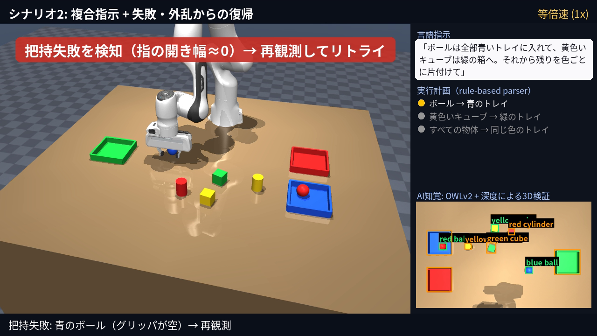
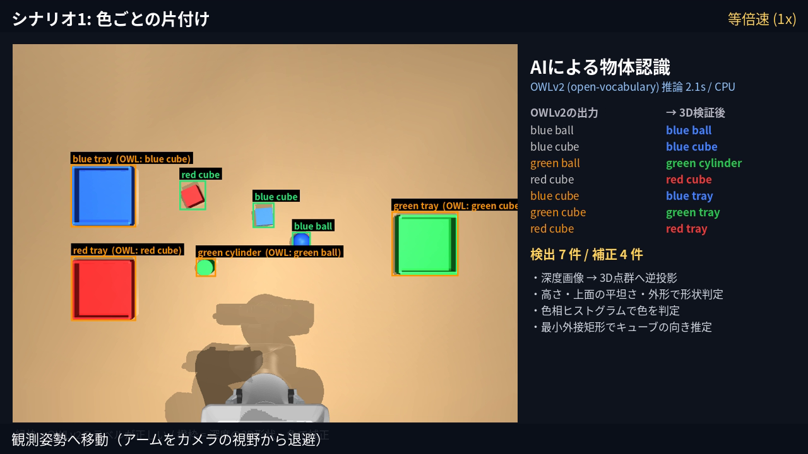
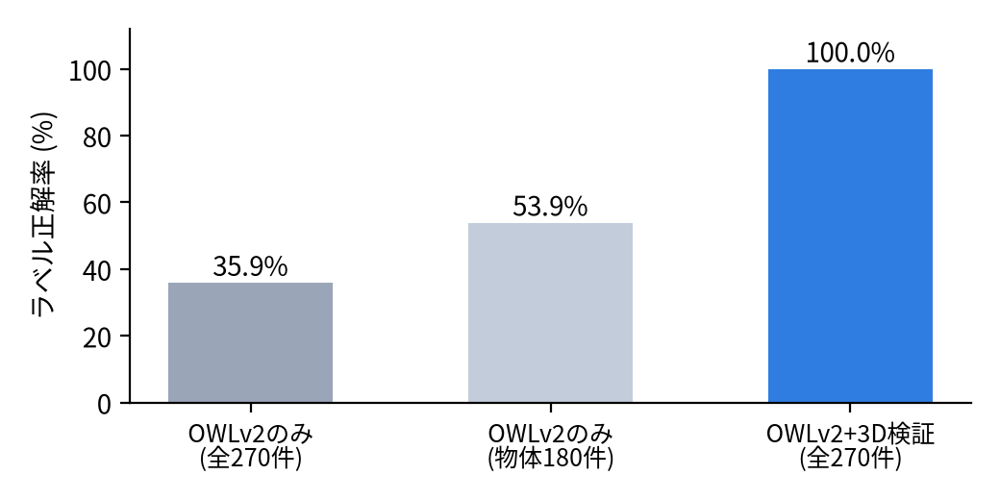

言語指示で動く片付けロボット
— オープン語彙物体検出AI × 深度による3D検証 × 閉ループ把持制御 —
Physical AI 応用1講座 最終課題 ／ 提出者: omnicampusアカウント名
1. 課題の概要
「ボールは全部青いトレイに入れて、黄色いキューブは緑の箱へ。それから残りを色ごとに片付けて」のような自然言語の指示を受け取り、
ロボットアームが机の上の物体を見つけて、指示どおりのトレイへ片付けるタスクを実装しました。
物体の発見にはオープン語彙物体検出AI「OWLv2」を推論で用い、その出力を深度画像から復元した3次元形状で検証・補正してから把持します。
1手ごとにカメラで観測し直す閉ループ構成なので、把持の失敗や、作業中に人が物体を動かすといった外乱からも自動で復帰します。
2. 目的
- 家庭や倉庫の「片付け・仕分け」を、プログラミングなしに言葉だけで指示できるロボットを目指す。
- 大規模事前学習モデル（OWLv2）を学習なし（推論のみ）でロボットに組み込み、どこまで実用になるかを定量的に確かめる。
- AIの認識誤りや把持失敗が起きても、システム全体として正しく作業を終えるための仕組み（検証・再試行）を作る。
3. システム構成
自然言語の指示
→
言語理解
（計画に分解）
→
観測姿勢へ退避
俯瞰RGB-D撮影
→
OWLv2 推論
（候補領域）
→
深度で3D復元
形状・色・向きを検証
→
対象と行き先
を決定
→
IK + 重力補償
で把持・運搬
→
指の開き幅で
把持判定
→
再観測で検証
（失敗なら再試行）

図1 動画の1コマ。右側に指示・実行計画・AI知覚を表示（故障注入による把持失敗を検知した場面）

図2 AI認識の説明画面。橙枠は OWLv2 のラベル誤りを3D検証で補正した物体
3.1 AIによる物体認識（OWLv2 + 3D検証）
- 俯瞰カメラ画像に対し、「a red cube」「a blue tray」など色×形状の全組合せ（16 クエリ）をテキストで与えて OWLv2 で検出（CPU で 1 枚約 2.2 秒）。
- OWLv2 は物体の位置はほぼ確実に捉える一方、色・形状のラベルはよく誤る（トレイを cube、円柱を ball と答える等）。そこで検出枠ごとに深度画像を3D点群へ逆投影し、
- 机やトレイ底面からの相対高さで物体だけを切り出す（トレイの中の物体も分離できる）
- 外形サイズでトレイ/物体を判別、上面の平坦さで球を、高さでキューブ/円柱を判別
- 彩度の高い画素の色相ヒストグラムの最頻値で色を判定（影やトレイ内の他物体に頑健）
- 上面の点群の最小外接矩形からキューブの向き（ヨー角）を推定し、把持方向を合わせる
3.2 言語理解
日本語/英語の指示を「対象（色・形状、指定なし＝すべて）→ 行き先（トレイの色 / 同じ色）」の順序付きリストに分解します。
「全部」「残り」「色ごと」「AとBを〜」「それから」などに対応し、例えば上記の指示は
[ボール→青] [黄色いキューブ→緑] [すべて→同じ色] になります。環境変数 OPENAI_API_KEY がある場合は LLM（gpt-4o-mini）で同じ形式の JSON を生成し、失敗時は自動でルールベースに戻ります（提出動画はオフラインのルールベースで実行）。
3.3 制御
- 減衰最小二乗法による逆運動学（位置＋姿勢の6自由度、ヌル空間で肘の姿勢を維持）と、min-jerk 補間による滑らかな直線軌道。
- 関節サーボだけでは重力で手先が約 6 mm 下がるため、重力・コリオリ補償のフィードフォワードを追加し、手先誤差を約 1 mm に低減。
- 物体の高さの中央を把持し、トレイ底面の約 1 cm 上まで下ろしてから半開きで離す（トレイの壁に指を当てない／背の高い物体を倒さない）。
4. 工夫した点
- AI と幾何のハイブリッド認識：OWLv2 単体のラベル正解率は 35.9%（物体のみでも 53.9%）でしたが、深度による3D検証を組み合わせることで 100.0% に向上しました（§5）。AI の得意な「どこに何かある」と、幾何の得意な「正確な形・大きさ・向き」を役割分担させています。
- 動画の中で AI の判断を可視化：OWLv2 の生の出力と補正後のラベルを並べて表示し、何をどう直したかが見て分かるようにしました（図2）。
- 閉ループの実行：1 手ごとに観測し直して結果を検証します。把持失敗（指が閉じきる）や運搬中の落下を検知すると再観測して再試行し、作業中に人が物体を動かしても新しい位置に追従します。動画では故障注入（把持位置を意図的に 4 cm ずらす）と外乱（人が物体を動かす）で実演しています。
- 実行できない指示の判断：「色ごとに片付けて」で行き先のトレイが存在しない黄色い物体は、勝手に別のトレイへ入れず「保留」と判断して机に残します。
- シミュレーションの物理的な問題の切り分けと対策：評価中、円柱だけが運搬中に指から滑り落ちる現象を発見しました。接触力を調べると、円柱と指先の小さな箱形パッドとの接触法線が不安定だったため、円柱の衝突形状を 24 角柱メッシュに置き換え（見た目は円柱のまま）、グリッパの把持力を約 2 N から約 12 N に強化しました。その結果、物体を指定位置まで運ぶテストでの落下は 2/18 回から 0/60 回になりました。
- GPU 不要：OWLv2・物理演算・描画（OSMesa）をすべて CPU で実行でき、誰でも再現できます。
5. 評価
5.1 認識精度（ランダム配置 30 シーン、物体6個＋トレイ3個 = 270 件）

図3 ラベル（色＋形状）正解率
| 指標 | 結果 |
|---|
| 検出率（物体・トレイ） | 270/270 |
| ラベル正解率 OWLv2のみ | 35.9% |
| ラベル正解率 OWLv2+3D検証 | 100.0% |
| 物体位置誤差（平均/最大） | 0.47 / 0.94 mm |
| キューブ向き誤差（平均） | 0.51° |
5.2 タスク成功率（ランダム配置 12 エピソード × 物体5個、指示3種類）
物体単位の正解率（最終的に正しいトレイ、または指示どおり机の上に残っている割合）は 100.0%、
全物体が正しく片付いたエピソードは 12/12（100.0%）でした。判定はシミュレータの真値で行い、エージェント自身は真値を一切使っていません。
5.3 提出動画の各シナリオ
| シナリオ | 正解/物体数 | 把持回数 | 把持失敗の検知 | 保留した物体 | OWLv2ラベル補正 |
|---|
| シナリオ1: 色ごとの片付け | 4/4 | 4 | 0 | – | 17/34 |
| シナリオ2: 複合指示 + 失敗・外乱からの復帰 | 6/6 | 6 | 1 | yellow cylinder | 40/63 |
6. 動画の構成（等倍速）
- タイトル：システムの全体像を説明
- シナリオ1「テーブルの上のものを同じ色のトレイに片付けて」：AI認識の説明画面 → 4 物体を色ごとに仕分け
- シナリオ2：複合指示の分解、故障注入による把持失敗→検知→再試行、作業中の外乱（人が物体を移動）への追従、行き先の無い物体の保留
- 結果のまとめ
7. 考察・反省点と今後の課題
- AI 単体の限界と補完：OWLv2 は「何かがある場所」の検出には非常に強い一方、シミュレーション画像の単純な物体では色や形の語を取り違えやすいことが分かりました。基盤モデルをそのまま信じるのではなく、別のセンサ情報で検証する設計が実用上重要だと感じました。
- 形状判定の前提：キューブと円柱の区別には物体の高さを使っており、物体の寸法をおおよそ知っている前提です。未知の物体へ広げるには、点群の法線分布の利用や、SAM などのセグメンテーションAIとの組合せが考えられます。
- 把持の汎用性：現在は真上からの把持のみです。形状に応じた把持姿勢の生成（学習ベースの把持検出など）や、積み重なった物体への対応が今後の課題です。
- Sim-to-Real：照明や質感が単純なシミュレーションで評価しているため、実機では色判定の閾値や深度ノイズへの対策が必要です。描画のランダム化（ドメインランダム化）による評価を追加したいと考えています。
- 言語理解：ルールベースは決定的で速い反面、言い回しへの対応に限界があります。LLM パーサを用意しましたが、API キーが無い環境のため提出動画では使っていません。ローカル LLM の組込みも検討したいです。
8. 参考・使用素材
- MuJoCo（DeepMind, Apache-2.0）／ MuJoCo Menagerie franka_emika_panda（Apache-2.0）
- M. Minderer et al., “Scaling Open-Vocabulary Object Detection” (OWLv2), NeurIPS 2023 ／ google/owlv2-base-patch16-ensemble（Apache-2.0）
- 講座の最終課題サンプル「Pick and Place Task」「ChatGPT APIによる自然言語ロボット操作」を発想の出発点とし、コードは独自に実装しました。